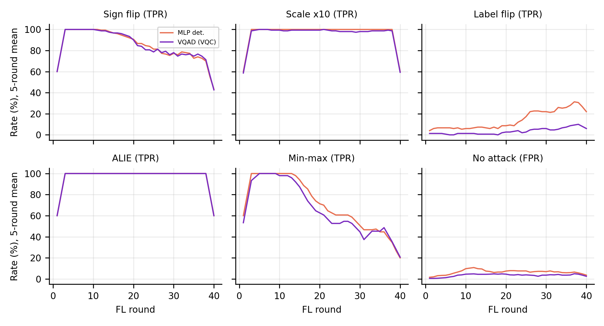
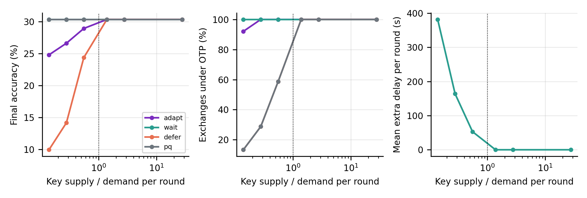
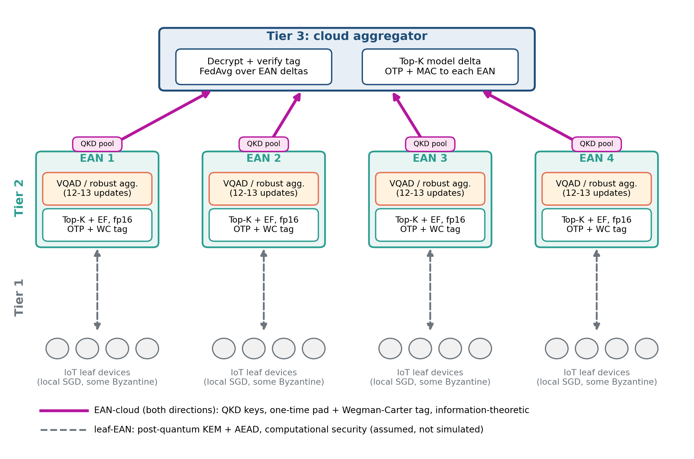

QuantumShield-Edge
A research simulator for QKD-keyed hierarchical federated learning with Byzantine-aware aggregation at the edge tier.
Scope. The QKD layer is emulated: key bytes come from a seeded pseudo-random generator standing in for QKD output,
so the simulator exercises the code paths and key arithmetic but is not by itself a cryptographic result. Leaf-to-edge links are
assumed post-quantum protected and are not simulated. No claim of quantum advantage is made.
What is executed
| Component | Implementation |
|---|---|
| Sealed transport | One-time pad plus Wegman-Carter tag; the cloud aggregates only what it decrypted and verified |
| QKD link model | Asymptotic and finite-key secret fraction, key pools, protocol-level BB84 Monte Carlo |
| Shortage policies | adapt, wait, defer, pq |
| Attacks | Sign flip, boosting, label flip, ALIE, min-max |
| Aggregators | FedAvg, Krum, median, trimmed mean, detector-weighted |
| Detectors | 4-qubit circuit against size-matched classical models on identical inputs |
Results at a glance
Final accuracy (%) on CIFAR-10, 50 leaves, 40 rounds, 3 seeds. Generated from the raw per-run files.
| Aggregator | No attack | Sign flip | Min-max |
|---|---|---|---|
| FedAvg | 33.1 ± 2.0 | 25.3 ± 3.1 | 21.7 ± 2.6 |
| Krum | 27.4 ± 2.6 | 25.8 ± 6.2 | 24.9 ± 3.0 |
| MLP detector | 33.4 ± 1.4 | 31.3 ± 1.9 | 27.5 ± 6.3 |
| VQAD (4-qubit circuit) | 33.1 ± 3.9 | 31.0 ± 0.8 | 26.9 ± 4.7 |
- No in-distribution quantum advantage: the circuit and a size-matched MLP perform alike.
- Leave-one-attack-out balanced accuracy over 8 seeds: circuit 0.84, MLP 0.61, linear 0.40; classical controls with trigonometric encoding reach 0.71 to 0.75.
- A link needs 76,096 key bits per round at 5% sparsity; the shortage policy decides whether you lose accuracy, delay, or one-time-pad coverage.



Reproduce
Every table and figure in the repository is generated from the per-run result files by the scripts in experiments/.
See the README for commands, tests and limitations.
MIT licensed. Sunil Gentyala and co-authors.